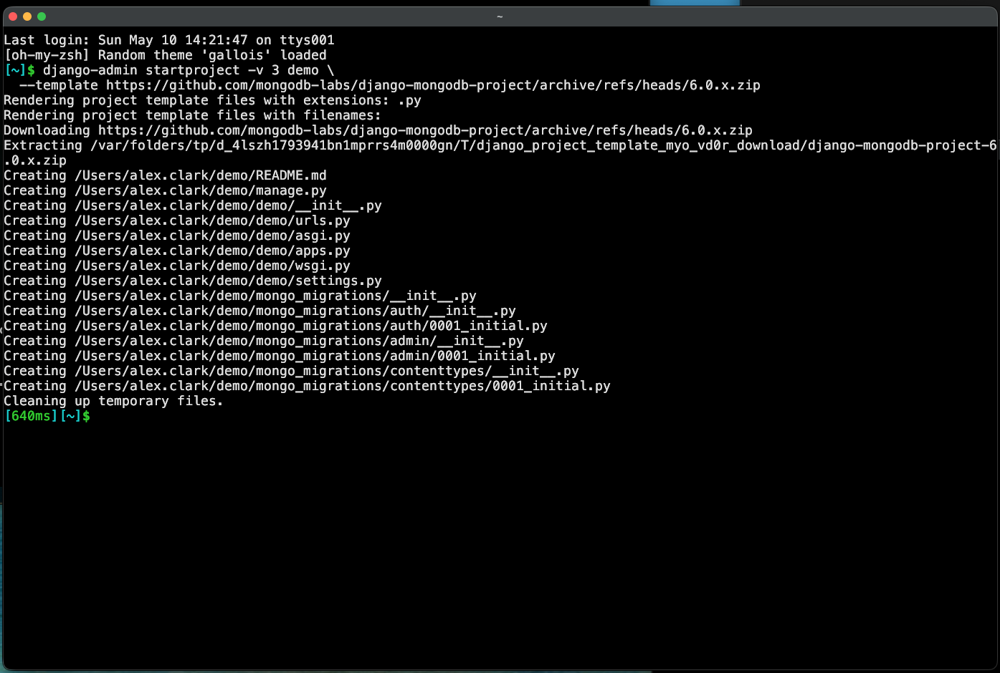
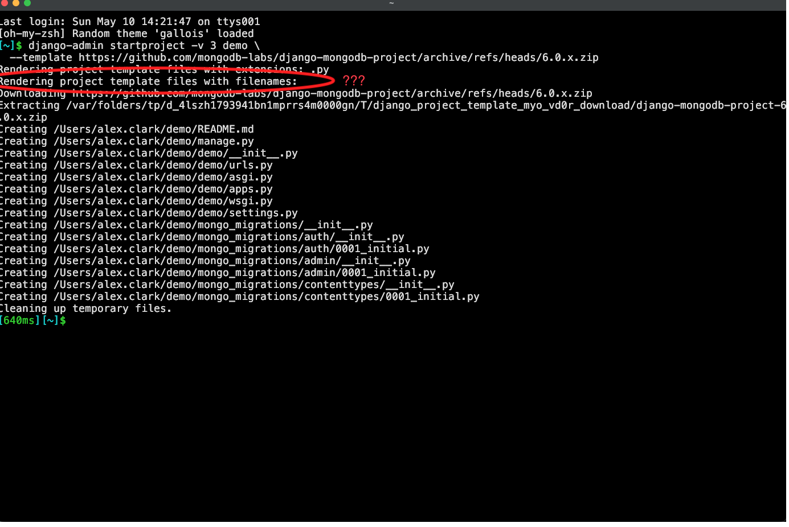

Django MongoDB Backend
Building Django apps on a document database with Django MongoDB Backend
pip install django-mongodb-backend
django-mongodb-backend 6.0.3 · Django 6.0.5 · 🤖 assisted
Agenda
- Install & configure
- Meet Django MongoDB Backend
- Why MongoDB for a Django app?
- Modeling: embedded docs, arrays, ObjectIds
- Querying & aggregation
- Indexes & unique constraints
- What's new in 6.0: encryption, geo, polymorphism
- Limitations & resources
Install
# Install the latest version
pip install django-mongodb-backend
# Or pick the version matching your Django version
pip install "django-mongodb-backend==6.0.*"
# Start a project from MongoDB's template
django-admin startproject demo \
--template https://github.com/mongodb-labs/django-mongodb-project/archive/refs/heads/6.0.x.zip
The project template wires up DATABASES, DEFAULT_AUTO_FIELD, and migration helpers for you.
Start a project
Project template — pre-configured to work with MongoDB.
django-admin startproject -v 3 demo \
--template https://github.com/mongodb-labs/django-mongodb-project/archive/refs/heads/6.0.x.zip
Start a project


Rendering project template files
Django's TemplateCommand renders a file if either is true:
- Its extension is in
--extension(default:py) - Its filename is in
extra_files— populated via--name
Use --name for files without a useful extension:
django-admin startproject -v 3 demo \
--name Dockerfile --name Procfile \
--template https://github.com/mongodb-labs/django-mongodb-project/archive/refs/heads/6.0.x.zip
Start MongoDB
Need a local server? mongodb-runner spins one up.
# Install once
npm install -g mongodb-runner
# Standalone server on the default port
mongodb-runner start
# Or a replica set (required for transactions)
mongodb-runner start -t replset
# List what's running, then stop everything
mongodb-runner ls
mongodb-runner stop --all
# Run a command with MONGODB_URI pre-set
mongodb-runner exec -t standalone -- sh -c 'python manage.py migrate'
Requires Node.js ≥ 20.19. Downloads the MongoDB binary on first run, caches it after. Source: mongodb-js/devtools-shared.
Inspect with mongosh
The official MongoDB shell — a JS REPL for ad-hoc queries.
# Install once (or `brew install mongosh`)
npm install -g mongosh
# Connect — accepts the same URI as the Django backend
mongosh "$MONGODB_URI"
# One-shot commands with --eval
mongosh "$MONGODB_URI" --quiet --eval 'db.movie.find({ year: 2024 })'
mongosh "$MONGODB_URI" --quiet --eval 'db.getSiblingDB("demo").dropDatabase()'
# Or pipe through mongodb-runner so MONGODB_URI is set for you
mongodb-runner exec -t standalone -- sh -c 'mongosh $MONGODB_URI'
Replaces the legacy mongo shell. Also available via Homebrew and the MongoDB downloads page.
Configure
# settings.py
import os
DATABASES = {
"default": {
"ENGINE": "django_mongodb_backend",
"HOST": os.environ.get("MONGODB_URI", "mongodb://localhost:27017"),
"NAME": "demo",
},
}
# Use ObjectId as the default primary key
DEFAULT_AUTO_FIELD = "django_mongodb_backend.fields.ObjectIdAutoField"
INSTALLED_APPS = [
# ...
"django_mongodb_backend",
]
HOST accepts any MongoDB connection string — including Atlas SRV URIs and TLS options. Read it from the environment so secrets stay out of the repo.
justfile
default:
@just --list
_uri:
#!/usr/bin/env bash
set -euo pipefail
URI=$(mongodb-runner ls | awk -F': ' '/^demo: / {print $2}')
if [ -z "$URI" ]; then
URI=$(mongodb-runner start --id demo | tail -n1)
fi
echo "$URI"
startproject:
django-admin startproject demo -v 3 --template templates/project_template
runserver:
cd demo && MONGODB_URI="$(just _uri)" python manage.py runserver
migrate:
cd demo && MONGODB_URI="$(just _uri)" python manage.py migrate
dropdb:
mongosh "$(just _uri)" --quiet --eval 'db.getSiblingDB("demo").dropDatabase()'
Meet Django MongoDB Backend
- A first-class Django database backend (not an ODM bolt-on)
- Tracks Django releases: 5.2 6.0
- Built on PyMongo
- Translates the ORM to MQL —
str(qs.query)prints MQL
Listed in Django's third-party database backends.
ObjectId primary keys
DEFAULT_AUTO_FIELD configures the field used for auto-generated PKs.
BigAutoField
- 64-bit integer counter
- Database hands out the next value
- Awkward under sharding
UUIDField
- 128-bit random value
- Generated client-side
- No time order
ObjectIdAutoField
- 12-byte BSON
ObjectId - Timestamp-prefixed — sorts ~chronologically
- Generated client-side, safe under sharding
ObjectId = 4-byte Unix timestamp · 5-byte random · 3-byte counter (12 bytes total).
Global vs per-app
Set it once in settings.py — or per app in AppConfig.
settings.py
DEFAULT_AUTO_FIELD = "django_mongodb_backend.fields.ObjectIdAutoField"
- Project-wide default
- Applies to every app that doesn't override
apps.py
from django.apps import AppConfig
class BlogConfig(AppConfig):
default_auto_field = "django_mongodb_backend.fields.ObjectIdAutoField"
name = "blog"
- Per-app override
- Wins over the global setting
Precedence: model pk > app default_auto_field > DEFAULT_AUTO_FIELD.
Migrations & contrib apps
What the project template adds to settings.py.
INSTALLED_APPS
INSTALLED_APPS = [
"demo.apps.MongoAdminConfig",
"demo.apps.MongoAuthConfig",
"demo.apps.MongoContentTypesConfig",
"django.contrib.sessions",
"django.contrib.messages",
"django.contrib.staticfiles",
"django_mongodb_backend",
]
- contrib AppConfigs swap in
ObjectIdAutoField django_mongodb_backendships checks & commands
MIGRATION_MODULES
MIGRATION_MODULES = {
"admin": "mongo_migrations.admin",
"auth": "mongo_migrations.auth",
"contenttypes": "mongo_migrations.contenttypes",
}
DATABASE_ROUTERS = [
"django_mongodb_backend.routers.MongoRouter",
]
- Re-points contrib migrations at ObjectId-friendly copies
MongoRouterkeeps embedded models offmigrate
All of this is what startproject --template writes for you — but you can add it to an existing project by hand.
The contrib AppConfigs
Where those INSTALLED_APPS entries actually live — your project's apps.py.
from django.contrib.admin.apps import AdminConfig
from django.contrib.auth.apps import AuthConfig
from django.contrib.contenttypes.apps import ContentTypesConfig
class MongoAdminConfig(AdminConfig):
default_auto_field = "django_mongodb_backend.fields.ObjectIdAutoField"
class MongoAuthConfig(AuthConfig):
default_auto_field = "django_mongodb_backend.fields.ObjectIdAutoField"
class MongoContentTypesConfig(ContentTypesConfig):
default_auto_field = "django_mongodb_backend.fields.ObjectIdAutoField"
Three one-line subclasses — exactly the per-app override pattern from the previous slide.
What the project template does
What
- Subclasses contrib AppConfigs →
ObjectIdAutoField - Redirects
MIGRATION_MODULEStomongo_migrations.* - Adds
MongoRoutertoDATABASE_ROUTERS
Why
- Stock migrations bake in
BigAutoField AuthConfigpins it; subclassing is the escape hatch- Embedded models aren't real collections
Use the template and you get all of this for free.
Why MongoDB?
Document model
- Schema fits the object, not the other way around
- Nested documents & arrays — no join tables
- Flexible evolution without painful migrations
Operations
- Horizontal scale via sharding
- Replica sets & transactions
- Atlas: managed, with search & vector search
Django on MongoDB?
- Keep what you love: ORM, admin, migrations, forms, auth
- Gain document-native modeling:
EmbeddedModelField,ArrayField,ObjectIdField - Drop into MQL/aggregation when you need it (
raw_aggregate) - Officially maintained by MongoDB
Your first model
from django.db import models
class Movie(models.Model):
title = models.CharField(max_length=200)
year = models.IntegerField()
genres = models.JSONField(default=list)
runtime = models.IntegerField(null=True)
class Meta:
indexes = [models.Index(fields=["year", "title"])]
Looks like Django, stores like MongoDB. id is an ObjectId.
Embedded documents
from django_mongodb_backend.fields import EmbeddedModelField
from django_mongodb_backend.models import EmbeddedModel
class Address(EmbeddedModel):
street = models.CharField(max_length=200)
city = models.CharField(max_length=100)
zip = models.CharField(max_length=20)
class Customer(models.Model):
name = models.CharField(max_length=120)
address = EmbeddedModelField(Address)
One document. No join. customer.address.city just works.
Arrays of embedded docs
from django_mongodb_backend.fields import (
ArrayField,
EmbeddedModelArrayField,
)
class LineItem(EmbeddedModel):
sku = models.CharField(max_length=40)
qty = models.IntegerField()
price = models.DecimalField(max_digits=8, decimal_places=2)
class Order(models.Model):
customer = models.ForeignKey(Customer, on_delete=models.CASCADE)
items = EmbeddedModelArrayField(LineItem)
tags = ArrayField(models.CharField(max_length=30), default=list)
One round-trip. The whole order — line items, tags — hydrated together.
Querying
# Top-level fields
Movie.objects.filter(year__gte=2020).order_by("-year")[:10]
# Reach into embedded docs with double-underscore
Customer.objects.filter(address__city="Berlin")
# Array membership
Order.objects.filter(tags__contains=["priority"])
# See the MQL the ORM produced
print(Movie.objects.filter(year=2024).query)
When you need MQL: raw_aggregate
pipeline = [
{"$match": {"year": {"$gte": 2020}}},
{"$group": {"_id": "$year", "count": {"$sum": 1}}},
{"$sort": {"_id": -1}},
]
for row in Movie.objects.raw_aggregate(pipeline):
print(row)
Full power of the aggregation framework — $lookup, $search, $vectorSearch, …
Indexes — including embedded fields
from django_mongodb_backend.indexes import EmbeddedFieldIndex
class Customer(models.Model):
name = models.CharField(max_length=120)
address = EmbeddedModelField(Address)
class Meta:
indexes = [
models.Index(fields=["name"]),
EmbeddedFieldIndex("address.city"),
]
New in 6.0.2: index/uniqueness on subfields of embedded & embedded-array fields.
Unique constraints
from django.db.models import UniqueConstraint
from django_mongodb_backend.constraints import EmbeddedFieldUniqueConstraint
class Customer(models.Model):
email = models.EmailField(null=True, blank=True)
address = EmbeddedModelField(Address)
class Meta:
constraints = [
# Multiple NULLs allowed (6.0.2+)
UniqueConstraint(
fields=["email"],
name="uniq_email",
nulls_distinct=True,
),
EmbeddedFieldUniqueConstraint("address.zip"),
]
Indexes do the work; the constraint is a thin wrapper over a unique index.
Polymorphic embedded models 6.0.3
from django_mongodb_backend.fields import (
PolymorphicEmbeddedModelField,
PolymorphicEmbeddedModelArrayField,
)
class CardPayment(EmbeddedModel):
last4 = models.CharField(max_length=4)
class WirePayment(EmbeddedModel):
iban = models.CharField(max_length=34)
class Invoice(models.Model):
payment = PolymorphicEmbeddedModelField([CardPayment, WirePayment])
history = PolymorphicEmbeddedModelArrayField([CardPayment, WirePayment])
Indexes & unique constraints on polymorphic subfields are also supported.
Queryable Encryption 6.0.1
- Encrypt fields client-side; query them without decrypting server-side
- Declared on the model, enforced by the backend
- Migrations refuse to run against a non-encrypted database
from django_mongodb_backend.encryption import EncryptedCharField
class Patient(models.Model):
name = models.CharField(max_length=120)
ssn = EncryptedCharField(max_length=11, queries={"queryType": "equality"})
Spatial lookups 6.0.1
from django.contrib.gis.geos import Point
from django.contrib.gis.measure import D
# 2dsphere index under the hood
Cafe.objects.filter(
location__dwithin=(Point(13.405, 52.52), D(km=2)),
)
GeoDjango-style queries, MongoDB-native execution.
The Django admin… still works
- Register models exactly as you always have
- Embedded fields render as nested forms
ObjectIdprimary keys are matched in URLs out of the box 6.0.3
# urls.py
urlpatterns = [
path("orders/<objectid:pk>/", OrderDetail.as_view()),
]
Limitations
- No SQL — some third-party apps that emit raw SQL won't work
- Cross-collection joins exist, but you'll lean on embedding
contrib.gissupport is partial (lookups, not full GeoDjango)- Schema migrations are lighter — MongoDB doesn't enforce a fixed shape
Check the docs' "Known issues" page before porting a large app.
Demo: polls app
The Django tutorial's polls app, ported to django-mongodb-backend.
EmbeddedModel+EmbeddedModelArrayField—Choiceembedded inQuestion.choicesArrayField—Question.tagsObjectIdAutoField— set onPollsConfigMongoManager.raw_aggregate— analytics viewSearchIndex+SearchText— Atlas Search, with__icontainsfallback
polls/models.py
from django.db import models
from django_mongodb_backend.fields import ArrayField, EmbeddedModelArrayField
from django_mongodb_backend.indexes import SearchIndex
from django_mongodb_backend.managers import MongoManager
from django_mongodb_backend.models import EmbeddedModel
class Choice(EmbeddedModel):
choice_text = models.CharField(max_length=200)
votes = models.IntegerField(default=0)
class Question(models.Model):
question_text = models.CharField(max_length=200)
pub_date = models.DateTimeField("date published")
choices = EmbeddedModelArrayField(Choice, blank=True, default=list)
tags = ArrayField(models.CharField(max_length=50), blank=True, default=list)
objects = MongoManager()
class Meta:
indexes = [
SearchIndex(
name="polls_question_search",
field_mappings={
"question_text": {"type": "string"},
"tags": {"type": "string"},
},
),
]
One collection, one document per question — choices and tags live inside.
Voting on an embedded Choice
def vote(request, pk):
question = get_object_or_404(Question, pk=pk)
try:
index = int(request.POST["choice"])
choice = question.choices[index]
except (KeyError, ValueError, IndexError):
return HttpResponseRedirect(reverse("polls:detail", args=(question.pk,)))
choice.votes = (choice.votes or 0) + 1
question.choices[index] = choice
question.save()
return HttpResponseRedirect(reverse("polls:results", args=(question.pk,)))
Mutate the embedded Choice in place, reassign it, save the parent.
raw_aggregate in a view
class AnalyticsView(TemplateView):
template_name = "polls/analytics.html"
def get_context_data(self, **kwargs):
ctx = super().get_context_data(**kwargs)
pipeline = [
{"$project": {
"question_text": 1, "pub_date": 1, "choices": 1, "tags": 1,
"year": {"$year": "$pub_date"},
"votes": {"$sum": "$choices.votes"},
}},
{"$sort": {"pub_date": -1}},
]
questions = list(Question.objects.raw_aggregate(pipeline))
per_year = {}
for q in questions:
per_year.setdefault(q.year, 0)
per_year[q.year] += q.votes
ctx["questions"] = questions
ctx["per_year"] = sorted(per_year.items())
return ctx
$sum: "$choices.votes" sums across the embedded array — no extra queries.
Atlas Search with a fallback
class SearchView(TemplateView):
template_name = "polls/search.html"
def get_context_data(self, **kwargs):
ctx = super().get_context_data(**kwargs)
q = (self.request.GET.get("q") or "").strip()
ctx["q"], ctx["results"], ctx["mode"] = q, [], "none"
if not q:
return ctx
try:
from django_mongodb_backend.expressions.search import SearchText
ctx["results"] = list(
Question.objects.annotate(_search=SearchText("polls_question_search", q))
)
ctx["mode"] = "atlas"
except Exception:
ctx["results"] = list(Question.objects.filter(question_text__icontains=q))
ctx["mode"] = "fallback"
return ctx
Atlas: $search. Local replica set: __icontains + a banner.
Run the polls demo
# In your django-mongodb-backend project
pip install -e ../polls
# settings.py: INSTALLED_APPS += ["polls"]
# urls.py: path("polls/", include("polls.urls"))
python manage.py makemigrations polls
python manage.py migrate
python manage.py seed_polls
python manage.py create_polls_search_index # Atlas only
python manage.py runserver # then visit /polls/
Resources
- Docs — django-mongodb-backend.readthedocs.io
- Source — github.com/mongodb/django-mongodb-backend
- Project template — github.com/mongodb-labs/django-mongodb-project
- Atlas free tier — mongodb.com/atlas
Thanks 👋
Questions?
{ name : "Jeffrey 'Alex' Clark",
title : "Senior Software Engineer",
group : "Database Experience Team",
email : "alex.clark@mongodb.com" }